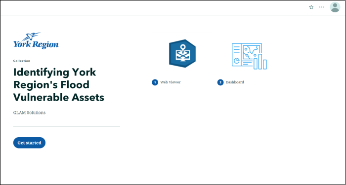

Welcome
Hello and welcome to my GIS portfolio which includes my academic coursework, education, personal work, skillset and contact information.
Education
The following outlines the education I received throughout my career.
1. University of Guelph - BSc in Environmental Science (2014-2018)
2. Sir Sandford Fleming College - Postgraduate Certificate in GIS Applications Specialist (2019-2020)
Skillset & Expertise
The following goes over various technical, practical and knowledge based skills.
Geographic Information Systems & Environmental Science
- Geovisualization, Cartography & Advanced Spatial Analysis
- Advanced Remote Sensing & Surveying-CAD Mapping
- GIS Database Principles, Development & Management
- Web GIS Design, Programming & Development
- Environmental Modelling & Geodesy
- Python Programming & Customization of GIS Applications
- Environmental Science Fundamentals, Environmental Economics & Project Management
- Soil Science, Conservation & Management
- Environmental Chemistry, Toxicology & Organic Chemistry
- Ecology, Aquatic Systems & Climate Change Biology
Technical & Practical Skills
- Environmental & GIS Research/Lab/Field Skills
- Remote Sensing Software, PCI Geomatica & eCognition
- Net/ASP.Net, VB.Net
- MS Office Products
- Amazon Web Service
- FME & GitHub
- ESRI Products/Software, Web GIS Development & Open-Source GIS
- C, C++ & C#
- Avenza Systems/Adobe Illustrator/MAPublisher
- R, PHP, Linux (AWS)
- Oracle, PL, SQL Server/Developer, RDBMS, PostgreSQL and PostGIS
- Python Automation
- HTML, CSS & JavaScript
- AutoCAD/CAD Mapping
GIS Coursework
This section goes over various work completed for the GIS Applications Specialist program at Fleming College.
1. Agricultural Land Use Suitability MCDA for Peel Region
The following output was created as part of a Spatial Analysis course where I developed a multi-criteria decision analysis on the suitability of agricultural land use in Peel Region.
2. Toronto Neighbourhood Safety Web Map Application
These web map solutions were created as part of a group project, which allows users to view Toronto public safety resources using ArcGIS Dashboard & VertiGIS Geocortex. The Dashboard solution provides a straight-forward user experience which data relating to public safety resources is updated in real-time and lets users zoom, query and select neighbourhoods. The Geocortex application provides the opportunity to explore data to a greater depth. Both solutions were hosted in a single web environment through ArcGIS Experience Builder.
ArcGIS Arcade and Pop-Up Configuration
Arcade was used in this project to configure the pop-ups for the web mapping application and to display relevant information in each neighbourhood regarding these services in the pop-up windows.The Arcade code was developed to display within each neighbourhood polygon all the names of health services. This expression makes use of the intersect function to show records and then iterates throughout every record and creates an array of these location names. When configuring the pop-up, we navigate to the pop-up screen and the associated text field. From here, various design choices can be manipulated and the Arcade expression code can be inputted as a form of dynamic text. When users open the popup, they can see a list of the public safety services within the neighbourhood shown in a clear format.
3. Remote Sensing & Environmental Modeling
These outputs were completed for assignments from courses involving remote sensing and environmental modeling.
Greyscale Landsat TM Image in Lindsay, Ontario
Greyscale of Landsat TM Image of image objects of NDVI (Normalized Difference Vegetation Index) grayscale values and highlighting the NDVI vales (-1 to 0 values) in Lindsay, Ontario (September 1999) highlighting water features, wetlands, and other wet/damp regions (green).
Geometric Correction of Landsat TM Image in Rice Lake, Ontario
Geometrically Corrected (using Standard False Color Composite) Landsat 5 TM Image over Rice Lake, Peterborough, Ontario (with black road vectors) on June 12, 1992.
Terraine Model for Peterborough, Ontario
Created a TIN (Triangular Irregular Network) and DEM (Digital Elevation Model) for a research area in Peterborough, Ontario (National Topographic System 31D8 data).
Multi-Spectral Supervised Classification Map of Oak Ridges Moraine, Ontario
Multi-Spectral Supervised Classification Map displaying the land cover classification of 6 areas using Operational Land Imager (OLI) within the Oak Ridges Moraine on April 14, 2017.
4. Lake Simcoe Biomass Web Application
Created using ArcGIS Web AppBuilder, this application was designed based on biomass data from Lake Simcoe with the configuration of various widgets and elements.
5. Identifying Flood Vulnerable Assets in York Region
This project aimed to provide a first look at the vulnerability of the Region's transportation and infrastructure assets to flooding. This was completed through the development of desktop tools and web solutions (StoryMaps, Dashboard & Geocortex 5 Web Viewer) to be used by York Region staff for assessing design standards for asset types in floodplain locations.
ArcGIS Pro / Desktop Tools
In order to provide the client with an iterative process for identifying criticality and flood vulnerable assets, ArcGIS Pro was used to develop desktop ModelBuilder and Python tools to accomplish this. The Find Flood Vulnerable Assets Tool identifies assets that are at risk of flooding. The Criticality Ranking Tool ranks road assets based on the total number of assets along a given road segment.

ArcGIS Dashboard
In order to effectively communicate the results of this project, ArcGIS Dashboards was used as it allows users to explore the data further with a web map, various widgets, and filters. This Dashboard has several functions using widgets and elements that allow users to view and analyze the flood risk analysis results. This includes a top 10 critical roads list, section to display number of flood vulnerable assets, municipality and road segment filters, and critical ranking indicator. The layout of the application was designed to be visually appealing without overwhelming the user. This was to help users quickly see which information they want in a clear and concise format and displays information while allowing users some interactive options to further explore the data.

VertiGIS Geocortex
A web map viewer was requested to allow easy exploration of the spatial data relevant to the flood and criticality analyses. Geocortex 5 Web was selected as the optimal platform based on availability and client preference. The Web Viewer allows users to pan and zoom around the web map, identify features, draw, measure, and search for specific roads or road segments. The application was built from an existing template offered by Geocortex and customized with changes to the layout, tool offerings, results display, and map search settings.

ArcGIS StoryMaps
A StoryMap Collection is used as the container for the two web products that were created in this project. This allows the user to stay on one page to view two different applications. The Collection keeps the light colour theme of both the Web Viewer and Dashboard products and makes use of a prominent shade of blue from York Region's logo as the accent colour for consistency. Configuration of the StoryMap Collection was very simple. In a new Collection template, the two applications were added as ArcGIS Content with appropriate thumbnails and titles. The default “Grid” layout option was kept and the Navigation style was set to the tabbed option so the application titles would be displayed in the final collection.
Personal Work
The following goes over work that I completed on my own time.
1. Map of Cemeteries in Peel Region
The following map showcases the location of various cemeteries that are located within the Peel Region (Ontario, Canada). Created using ArcGIS Pro, the data was taken from the Region of Peel website and their Open Data Portal.
2. Brampton Facilities - Energy Consumption & Greenhouse Gas Emissions Web Map Application
A web map application (hosted on ArcGIS Online) based on the City of Brampton facilities and their annual GHG (greenhouse gas) emissions, natural gas/energy consumption and more. This dataset has 711 records and includes city facilities such as public libraries, sports facilities, fire stations, transit buildings and administrative offices. Users can inspect the different sites and view relevant information pertaining to each site. They can also zoom in/out of different areas on the map, use the search feature, view the attribute table and more. An arcade expression was created which assesses each facilities respective GHG (greenhouse gas) emissions and displays whether it is above or below 50,000 kg.
3. City of Toronto Coronavirus (COVID-19) Web Map Application
Created with ArcGIS Pro and hosted on ArcGIS Online, this application revolves around the coronavirus (COVID-19) and related datasets within the city of Toronto. This application has data layers including areas of neighbourhood improvement, locations of immunization clinics, testing site locations, public health service provider locations and the neighbourhood profile of Toronto (includes clipped data from an air pollution and COVID-19 impacts dataset in Toronto Neighbourhoods). Using ArcGIS WebApp Builder, the application has various widgets/elements and users can zoom in and out of different areas, filter data and layers and select different areas for information. The data for this project was gathered from various open datasets such as the City of Toronto, Government of Canada, and the Ontario GeoHub website.
Arcade
The Arcade expression makes use of the male and female population data within the Neighbourhood Profile + Air Pollution and COVID-19 dataset. I created the variables "MAL" for male populations and "FEM" for female populations. The expression makes use of the logical function ("when") to evaluate records as either "high" if the male population is over 50 and "low" if the female population is less than 50. If the expressions both evaluate to not true, then it results in "n/a".
Python/ArcPy Code
With ArcGIS Pro and ArcPy, following python code lists all the current layers within this project and to check whether they have broken data sources. I made use of various ArcPy and Python features such as listLayers, listMaps, isBroken, for loops, arcpy.mp.ArcGISProject, print function and more. I first created a variable ("aprx") which references the current project. I then made use of the listMaps and listLayers methods to produce a list of all layers for each according map in the project. Following this, the for loops were used to iterate through each layer and print their names and associated isBroken layer property (checks for broken data source). The use of "\n" is done to input a line before the map name and form a separation between every layer for each map.GIS
4. Google Earth Engine Widget & Nitrogen Dioxide Concentration Levels
Based on a workshop, aGoogle Earth Engine widget was developed using JavaScript code to compare nitrogen dioxide concentration levels in Toronto, Detroit, New York, and Chicago in 2019 and 2020. The data and information were taken from the TROPOspheric Monitoring Instrument (TROPOMI) dataset which is a satellite instrument that produces near real-time high-resolution imagery of nitrogen dioxide and oxide concentration levels. Software/Languages: Google Earth Engine & JavaScript. The code displays the differences between the nitrogen dioxide columns in Toronto, Detroit, New York and Chicago (and also a bit in Montreal) and shows that their concentration levels are noticeably less in 2020 compared to 2019. These differences can be a result of the various coronavirus lockdowns that occurred during those time periods.
Code Breakdown
To create these resulting maps, the code had to developed a certain way with the first step being to import the TROPOMI nitrogen dioxide dataset, selected a product and then filter it for two separate timeframes. To display the various nitrogen dioxide concentration levels, I had to create a gradient of band color to represent them.The ui. functions are used to develop the widget and would now need to create two separate maps to display the information. Followed by this, both maps will have to be linked which will complete the widget and this is done with the ui.Map.Linker() function and setting the center of the map. The middle separator bar can work to compare the differences in nitrogen dioxide concentration levels between both timeframes.
5. Cartographic Map of Zambia Hosptials & Airports
This map displays the country of Zambia (Africa) and the locations of various hospitals, airports, country and provincial boundaries. The data was gathered from various websites and data portals.
Contact
If there any inquiries, kindly contact me through LinkedIn: https://www.linkedin.com/in/gowsigan-s-2121a2128/.